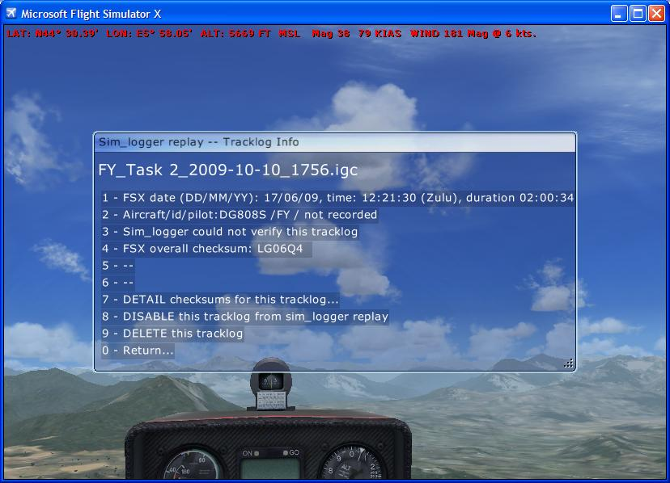
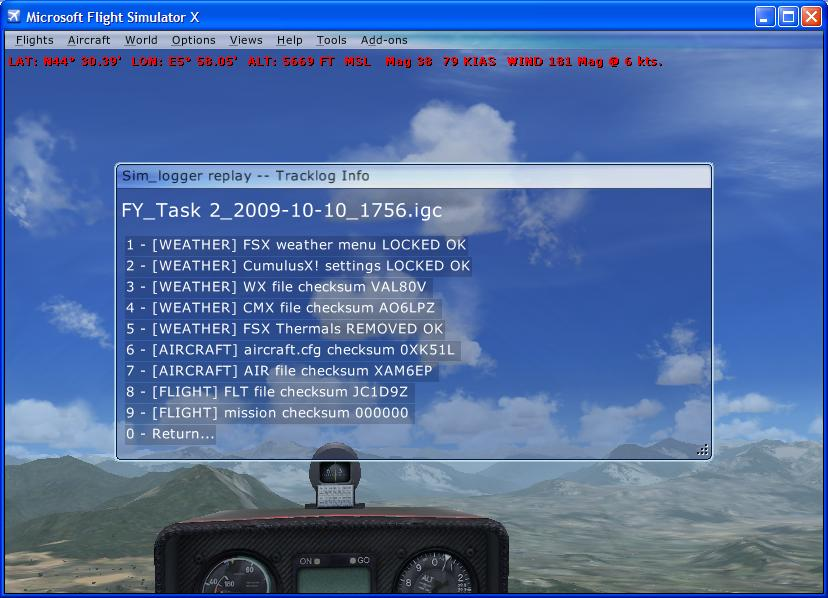

Soaring with FSX >> sim_logger
Sim_logger Version 2 is the freeware FSX add-on module that automatically records and replays your flights using the industry standard IGC tracklog file format.
Update notes for this release: 2.31 is a BUGFIX release for non-English FSX users to allow save of un-verified IGC tracklogs (i.e. where the logging didn't start with the load of a saved flight). If you already have sim_logger versions 2.28 or newer, version 2.31 can be installed as an upgrade by dragging just sim_logger.exe from the Modules\sim_logger\exe in the zip into the matching folder in your FSX installation.
(further release info see Release notes)
Sim_logger can both save and automatically replay IGC-format tracklog files in FSX. Sim_logger is installed as an add-on module to FSX, and appears entirely under the 'Add-ons' menu within a flight. The installation of sim_logger is a simple drag-and-drop into the 'Modules' folder of FSX, plus a double-click on a command file to update FSX's 'exe.xml' startup config file.
There are really three usage scenarios involving sim_logger:
After installing sim_logger, FSX will have an "Add-on->Sim_logger" menu, on which the most important menu option is "SAVE an IGC tracklog file now...". This will save the tracklog up to the current point.
Please note that sim_logger is always recording an internal log of your flight, right from the moment you first load a flight or start a mission. So you only need a menu option to SAVE your tracklog. Sim_logger restarts the tracklog every time it detects you load a new flight...
To have a better understanding of what sim_logger is good at and not so good at, it is worth noting that sim_logger only records the position of the user aircraft (latitude, longitude, altitude) every four seconds, which is consistent with writing an IGC-format tracklog file. The main pluses of this approach are:
The downside is a lot of information is not recorded, e.g. undercarriage position - if your goal is to make an animated movie showing up-close aircraft traffic, you should look at the excellent freeware fs-recorder.
Here's the view from the cockpit when a few other tracklogs are being replayed:

Sim_logger V2 includes a sample flight "Schuylkill County Ridge Run" with a dozen associated IGC tracklog files. If you simply load that flight, select an aircraft while paused at the start (or stay with the default DG808S), unpause, and wait a couple of seconds, you will see the fleet of gliders take off in front of you. Hit Control-Shift-Y for an aerotow to follow them, and try and complete the cross-country flight to Mifflintown yourself. Maximum launch height 3000 feet, then the basic trick is to dive for the ridge (follow the planes in front!) and ridge run to the Susquahanna River. You need to slow up before the river to gain enough height to make the upwind ridge on the way to Mifflintown. Here's the view during the aerotow:

I've created a screenshot walkthrough of sim_logger replay of Day 3 of the 2008 World Gliding Championships which will illustrate what the Version 2 replay capabilities are. The competition had 46 gliders all flying the same task, and I've included the real IGC files in the sim_logger version 2 zip file.
Installation is simple (drag and drop of one folder) but you must disable aircraft collisions in the FSX menus or you will typically collide with a tracklog of your own previous saved flight the instant you start a new one...
Once installed in FSX, usage of sim_logger both for record and replay of IGC tracklog files is fairly simple (i.e. the features are actually fairly basic).
A confirmation message will scroll across the top of the screen and your IGC tracklog will now be stored in a sub-folder of the folder the original flight file was loaded from. Now you can exit the flight, or indeed FSX, and the tracklog file will have been safely stored.
By default, FSX stores flight files (e.g. "My Flight.FLT") in the
"My Documents\Flight Simulator X Files\"
folder. Hence by default, for that flight, sim_logger will store the IGC tracklog file in
"My Documents\Flight Simulator X Files\My Flight\<id>_My Flight_<datetime>.igc"
where <id> is the tail number of the aircraft you're flying and <datetime> is YYYY-MM-DD_HHMM. E.g. a real
example from my computer is:
"My Documents\Flight Simulator X Files\Task 2\B21_Task 2_2009-11-11_1922.igc"
SAVE an IGC tracklog file now. This will store an IGC tracklog file of the recorded flight in your "Flight Simulator X Files" folder in a sub-folder with the same name as the currently loaded flight.
RESTART tracklog from here. This has the effect of trimming of your flight up until now in any tracklog you subsequently save. This is useful if you want to slew to a new position before the tracklog starts, and then start logging. By default, sim_logger will be logging the position of your aircraft from the moment the flight loads.
Manage tracklog files. This is where you can see within FSX the tracklogs associated with the currently loaded flight. If you open "My Documents\Flight Simulator X Files" in Windows Explorer and navigate to the sub-folder with the same name as the currently loaded flight, you will see the same files. More information with screenshots is given in the section following.
ENABLE/DISABLE tracklog replay. Thanks to Peter Luerkens for suggesting this menu option... this will turn off (or back on) the automatic replay of stored IGC tracklogs.
If now or in the future you load the same flight (use the Load... button on the "Free Flight" menu), then sim_logger will automatically load any IGC tracklog files it finds in the named sub-folder, and replay those logs in FSX.
If you find the automatic replay of previously saved IGC files annoying, or just not what you want, there are a few mechanisms that give you some control over what's happening.
The simplest process to use to prevent a saved IGC file replaying is to use the "Add-on->Sim_logger->Manage tracklogs for current flight" menu item, which will list the tracklogs that sim_logger is auto-loading for the current flight.

Here you can select the tracklog you want to manage - either click the keyboard key corresponding to the tracklog file you want, or click on that row in the menu with your mouse.
When you've clicked on the filename in the "Select File to Manage" window, the following "Tracklog Info" menu will appear.
In this "Tracklog Info" page, you can see more information about that particular tracklog.
For soaring use, the important lines are 3 & 4, and this isn't a great example because sim_logger is saying it "could not verify this tracklog" which means the file content does not match the general checksum, so you cannot rely on the content of the file in any way. (Apologies, that was me manually tweaking the file during testing). If line 3 says 'verified OK' and line 4 matches the overall checksum expected for the combination of files, then you don't have a need to look at 'DETAIL checksums' at all.
To prevent the tracklog auto-loading when the current flight is loaded, choose option '8 - DISABLE this tracklog from sim_logger replay'. The tracklog will still appear in the list shown before, but will not auto-load. For the Windows-savvy amongst you, this feature is implemented simply by renaming the IGC file, embedding [X] before the '.igc', so a filename "B21_My Flight_2009-11-11_1233.igc" becomes "B21_My Flight_2009-11-11_1233[X].igc".
If a tracklog file is 'disabled' for replay, the disable menu option changes to 'ENABLE' which has the reverse effect to that described above.
You can also remove the IGC tracklog from the 'auto-play' function by simply moving the file out of the sub-folder using Windows Explorer.
Note you can add additional IGC tracklog files to auto-play simply by dragging them into the log folder for that particular flight.
Assuming you have "verified OK" on the previous page, you can see greater detail on the checksums of the various files involved via the Checksum Detail window.
A significant feature of sim_logger is for gliding use, storing encrypted checksums in approved spaces within the IGC file. Option '7. - DETAIL checksums for this tracklog' displays the checksums and other status fields embedded within the IGC file, so you can be confident pilots within FSX are flying in the same conditions.
Beyond the basic checksum concept that ensures the weather and aircraft performance files were as expected when the tracklog was saved, for soaring use an important record is line 5, FSX Thermals Removed OK. For soaring in FSX you should install the freeware CumulusX! from Peter Luerkens.
If you download an IGC file from elsewhere, you can copy it to a suitable folder with the same name as a loadable flight (e.g. into a "My Documents\Flight Simulator X Files\<flight name>\" folder) and then when you load that flight the IGC file will be automatically loaded.
If the IGC file was originally created by sim_logger, you can then check the validity of the various checksums via the FSX Add-ons menu as described above.
If you are familiar with the Windows "Command Window", you can also check the validity of a sim_logger IGC file:
C:\Program Files\Microsoft Games\Microsoft Flight Simulator X\Modules\sim_logger>sim_logger logs\B21_Task1_2009-10-09_1322.igc
Sim_logger is optimised for the use of FAI-standard IGC-format tracklog files.
This means saved tracklog files can be viewed in a variety of real-life soaring software packages out there, e.g. the comprehensive (payware) soaring analysis package SeeYou, or the (free) tracklog sharing website www.everytrail.com.
IGC files can also be converted for display in Google Earth either via the everytrail site mentioned above or with more functionality gpsvisualizer.com.
The fact that the IGC-format files only contain very limited data (time-latitude-longitude-altitude) and the sampling interval is expected to be quite long, e.g. every four seconds, the sampling and saving method is very efficient. This has the benefit that sim_logger is designed to always record an internal log of your flight, awaiting the pilot clicking the 'save' option to keep it for posterity. The background workload in making the recording is also insignificant which is helpful in getting the maximum framerate in FSX. Note that a multi-hour tracklog might only be 100KB or so.
For replay, a similar efficient technique has been used, with the AI aircraft being updated once-per-second to be slewed (on a curved path) between the four-second sample intervals. This means hundreds of IGC tracklogs can potentially be replayed concurrently, e.g. the replay of the entire field of a real-life 60-entry competition soaring task. In my testing the performance limit comes from the graphics of the AI models displayed rather than the replay technique.
In general other approaches to animating aircraft within FSX have assumed detailed position control of each AI object on a per-visual-frame basis (e.g. 30 times each second) which can imply greater overhead in controlling the AI objects and potentially much larger tracklog storage requirements for the rapid lat-long-alt-pitch-bank-heading-velocity samples.
To understand the limitation of sim_logger, you just have to be aware that the information recorded during normal flight is Time-Latitude-Longitude-Altitude-EngineNoise, at four-second intervals.
The top part of the IGC log file can record a load of ancilliary information, like flight plan, aircraft type and pilot name, but the regularly recorded time-series stuff is those five values only.
This means that the IGC tracklog file is great for flight verification but is pretty limited if you want to replay the flight from that data.
For flight replay, sim_logger necessarily interpolates beween the four-second lat/long/alt samples to move an AI aircraft along an estimation of the original flightpath, and sim_logger calculates suitable pitch/bank/heading values from the original position data.
I hope it is clear from this approach that aerobatic manoevers like rolls or sideslips are completely invisible to sim_logger because bank and heading are simply not recorded in the IGC tracklog data. Your lat/long/alt values along a flightpath are the same whether you are doing a roll or not...
There is a great solution for you if you want to record the exact motion of an aircraft, including the various animations of undercarriage, flaps etc. That is the freeware fs-recorder from Matthias Neusinger.
|
WARNING! |
If you use CumulusX, ignore this warning. If you are *not* using CumulusX for your thermals (e.g. Active Sky): Please be aware sim_logger will DISABLE FSX THERMALS by default, on the assumption that CumulusX is being used for thermals. A sim_logger.ini file setting (disable_fsx_thermals = false) (see step 6) will ensure sim_logger leaves your FSX thermals in place. The default value (disable_fsx_thermals = true) means sim_logger will rename your "ThermalDescriptions.xml" to "ThermalDescriptions[X].xml", so to reverse-out the change all you have to do is rename it back. |
To confirm sim_logger is installed simply start FSX and load any flight, and you should see a Add-Ons->Sim_logger sub-menu.
Go into your FSX 'Realism' settings and uncheck the box that says "allow collisions" as illustrated below. This will prevent a previously saved tracklog file from immediately colliding with you when you start the flight.

If you are going to replay IGC tracklog files from other pilots, it is worth going into your settings menu and adjusting the 'red' displayed information above the AI aircraft to show just the tail number. Note that sim_logger will embed the actual tail number of the original user into the IGC tracklog file, so you can more easily identify who is who when you're flying in this effective 'offline multi-player' mode.

The ini file included with sim_logger gives you a satisfactory working configuration. After you are comfortable that sim_logger is installed correctly you can edit this file with Notepad or something similar to set a few minor items such as a default "Pilot Name" to be included in the IGC tracklog files.
Perhaps more importantly, if the constant replay of flight files by sim_logger is inconvenient for you, you can place entries in the sim_logger.ini file that stop the auto-replay of stored flights.
Full instructions are included as comments within the sim_logger.ini file.
This will give you an idea of what's in the saved tracklog file, if you're interested.
Good documentation on the format can be found on my IGC file format homepage.
AXXX sim_logger v1.18 HFDTE060507 HFFXA035 HFPLTPILOTINCHARGE: not recorded HFCM2CREW2: not recorded HFGTYGLIDERTYPE:DG808S Paint1 HFGIDGLIDERID:B21 HFDTM100GPSDATUM: WGS-1984 HFRFWFIRMWAREVERSION: 1.18 HFRHWHARDWAREVERSION: 2009 HFFTYFRTYPE: sim_logger by Ian Forster-Lewis HFGPSGPS:Microsoft Flight Simulator HFPRSPRESSALTSENSOR: Microsoft Flight Simulator HFCIDCOMPETITIONID:B21 HFCCLCOMPETITIONCLASS:Microsoft Flight Simulator I023638FXA3941ENL C091009123704000000000104Austrian Soaring C4717477N01247209EZell Am See Start C4717477N01247209ELOWZ C4717477N01247209ESTART C4713910N01213830ETP1 C4740520N01213110ETP2 C4729290N01249440ETP3 C4717477N01247209EFINISH C4717477N01247209EZell Am See Finish L FSX date/time on users PC: 2009-10-09 12:37 L FSX FLT checksum 19CJG7 (AustrianSoaring4\AustrianSoaring4.FLT) L FSX WX checksum Q36FLC (AustrianSoaring4\AustrianSoaring4.WX) L FSX CMX checksum QHQ81T (AustrianSoaring4\AustrianSoaring4.CMX) L FSX mission checksum E36HJ4 (AustrianSoaring4\AustrianSoaring4.XML) L FSX aircraft.cfg checksum NNBRGQ (DG808S\aircraft.cfg) L FSX AIR checksum Y1PD66 (DG808S\DG808S.AIR) L FSX CumulusX status: LOCKED OK L FSX WX status= LOCKED OK L FSX ThermalDescriptions.xml REMOVED OK L FSX GENERAL CHECKSUM LV2B5A <---- CHECK THIS FIRST B1030574715622N01251250EA0253502535027000 B1030594715633N01251183EA0252402524027000 ...snip.... a lot more 'B' records ... GE2EV0W
sim_logger replay uses a 'slew mode' AI following algorithm.
The source code for a beta version (2.21) can be viewed here. The entire program is written as a single visual c++ file, with the main sections being:
If you disable the sim_logger load in your exe.xml (e.g. rename the Modules\sim_logger folder), you can start FSX, open a command window and type "sim_logger debug", and sim_logger will echo to the console variety of debugging status information as it executes.
The SOAR forums are probably the best place to start if you have questions about sim soaring. Support for both sim_logger and CumulusX are there also.
Cambridge Aero Explorer Plus (manual). This seems to me to be far and away the best free Windows client for viewing and analysing IGC tracklog files. Plus multiple tracklog files can be animated together to see everyone flying around a task. The orginal exe can be found at Guy Byar's winscore site.
fs-recorder - records and replays flights within FSX, including a large range of FSX detail features. fs-recorder uses a proprietary tracklog file storage format so you can't use the files for anything else, but the technique is optimised for use within FSX so the program is great for creating animated movies in FSX.
IGC Replay - replays the IGC tracklog flights (from any source including sim_logger) within Google Earth.
CumulusX! - adds thermals and ridgelift to FSX - freeware from Peter Luerkens.
gpsvisualizer.com - convert an IGC file for display in Google Earth
www.everytrail.com - view and share your tracklogs online. There is a formative sim soaring group on everytrail which anyone can join.
{kind=link}